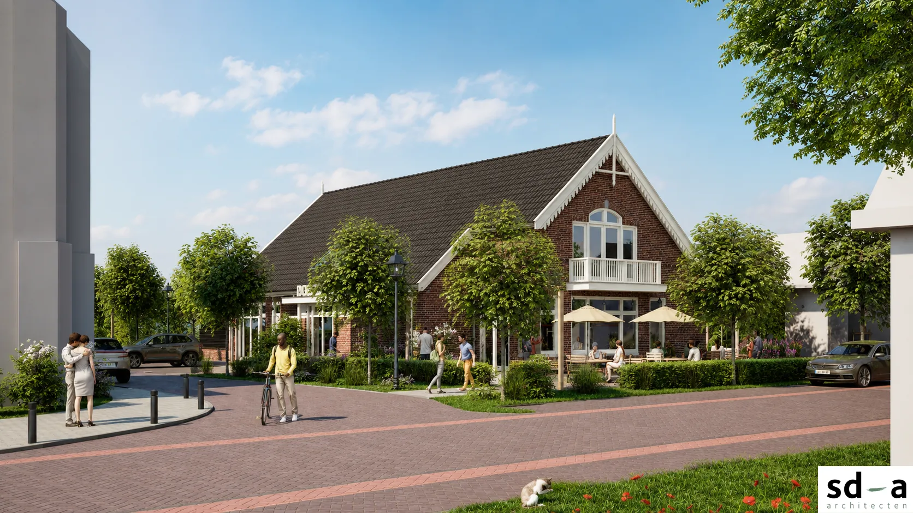
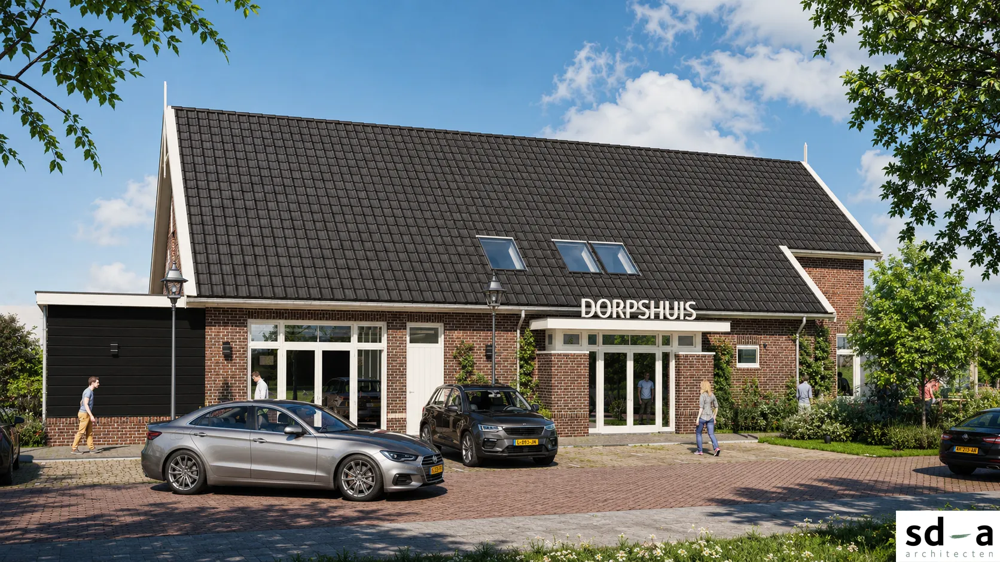
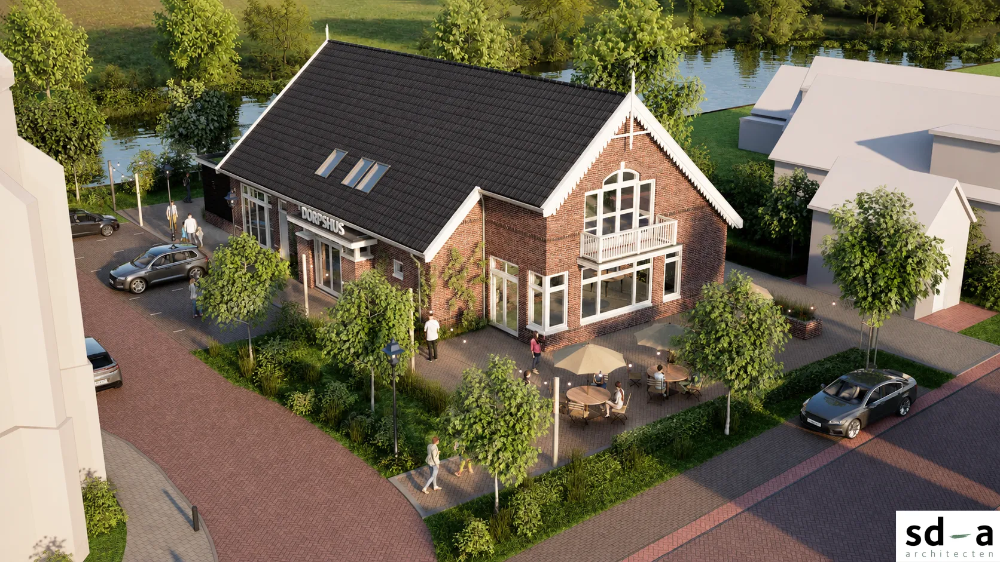

Ontmoeten
Een plek waar verenigingen, inwoners en organisaties elkaar ontmoeten. We brengen mensen samen, nu al vóór de realisatie.
Het toekomstige dorpshuis wordt dé ontmoetingsplek voor alle inwoners van Schermerhorn: een toegankelijke, multifunctionele plek die sociale samenhang, leefbaarheid en welzijn in het dorp versterkt.

Mededeling
Donderdag 19 november, 20.00 uur
Hoe is het dorpshuis begonnen, wie zijn erbij betrokken en hoe gaat de bouw verlopen? Tijdens de informatieavond hoort u het van de mensen die eraan werken. Na de pauze kunt u langs de tafels van de verschillende teams om in gesprek te gaan en u aan te melden.
Opening en toelichting wat er gaat gebeuren door Martin
Hoe is het begonnen door Frans Schuurman
Hoe SWS, Ruiterstok en Nieuw Leven betrokken door Dennis de Waard
Rol Bouwteam, nu en tijdens de bouw door Bert van Langen
“Doorstart Dorpsraad” in Team Dorpsbelang door Henrico Timmer
Samenwerking aannemer en dorp door aannemer
Vacatures bestuur, RvT en diverse teams Dorpshuis beheer etc. door Nico en Linda
Mogelijkheid tot stellen vragen publiek door Martin
Pauze + publiek langs diverse “standjes/tafels” over diverse teams. Én gesprekken voeren én aanmelden door allen
Sluiting


Impressies: SD-A architecten
Het dorpshuis moet het kloppend hart van Schermerhorn worden. In de aanloopfase bouwen we daarom nu al aan een sterke organisatorische en sociale basis.
Een plek waar verenigingen, inwoners en organisaties elkaar ontmoeten. We brengen mensen samen, nu al vóór de realisatie.
Samenwerken en activiteiten organiseren, voor en door alle inwoners. Met dorpsbijeenkomsten houden we iedereen op de hoogte en betrokken.
Het dorpshuis is van het dorp. De start van de bouw (eerste paal) is voorzien voor eind 2026 / begin 2027.
We zetten commissies op voor onder meer bouwen, activiteiten, beheer, communicatie en fondsenwerving. Daarvoor zoeken we vrijwilligers en initiatiefnemers uit het dorp.